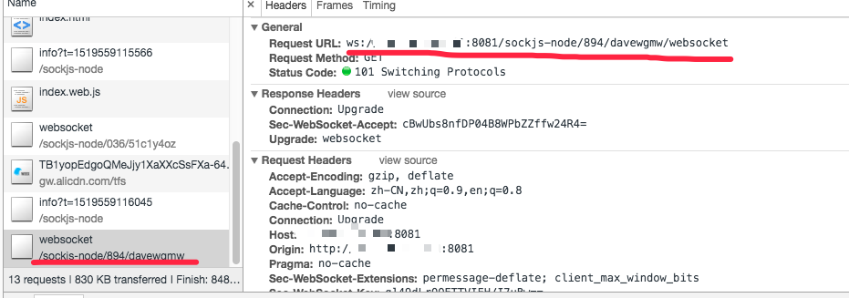
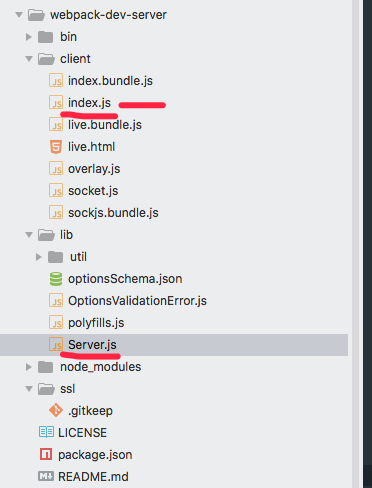
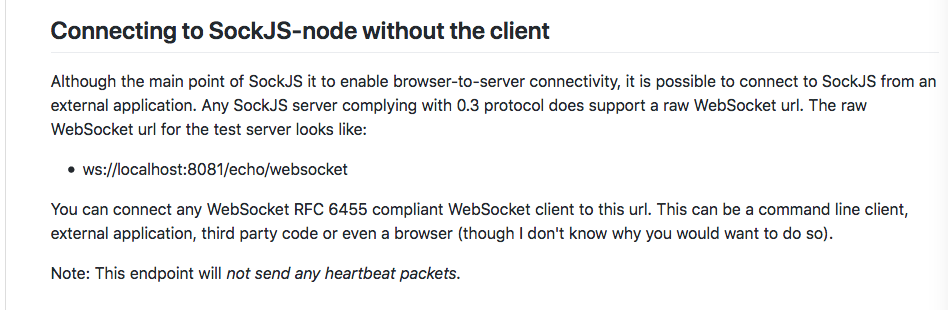

相关版本：
在进行weex开发，修改代码时，网页能进行自动刷新，方便开发人员看到改动。但是，在app端，由于加载的仅仅是业务代码的js文件，不能实现自动刷新。
在官方提供的playground app中，在界面上添加了刷新按钮，来手动刷新。
在playground的代码中发现了hotreoload的相关代码：
1 2 3 4 5 6 7 8 9 10 11 12 13 14 15 16 17 18 19 20 21 22 23 24 25 26 27 28 29 @Override protected void onCreate (Bundle savedInstanceState) super .onCreate(savedInstanceState); setContentView(R.layout.activity_wxpage); setCurrentWxPageActivity(this ); ... if (WXPAGE.equals(mUri.getScheme())|| ... startHotRefresh(); ... }else if (TextUtils.equals("http" , mUri.getScheme()) || TextUtils.equals("https" , mUri.getScheme())) { ... startHotRefresh(); } ... } private void startHotRefresh () try { String host = new URL(mUri.toString()).getHost(); String wsUrl = "ws://" + host + ":8082" ; mWXHandler.obtainMessage(Constants.HOT_REFRESH_CONNECT, 0 , 0 , wsUrl).sendToTarget(); } catch (MalformedURLException e) { e.printStackTrace(); } }
虽然有hot refresh的代码，但是没用。因为startHotRefresh()中监听的是String wsUrl = "ws://" + host + ":8082"; 8082端口，而我们的weex-toolkit创建的项目没有创建相应的socket server。
估计官方填坑只填了一半。怎么肥四！？
通过浏览器的开发者模式，我们可以看到webpack-dev-server创建了websocket server.

有戏了！
打开node_modules文件夹下的webpack-dev-server.我们主要看client/index.js和lib/Server.js文件：

client/index.js 获取webscoket地址和端口，赋值为urlParts：
1 2 3 4 5 6 7 8 9 10 11 12 13 14 15 16 17 18 19 20 var urlParts = void 0 ;var hotReload = true ;if (typeof window !== 'undefined' ) { var qs = window .location.search.toLowerCase(); hotReload = qs.indexOf('hotreload=false' ) === -1 ; } if (typeof __resourceQuery === 'string' && __resourceQuery) { urlParts = url.parse(__resourceQuery.substr(1 )); } else { var scriptHost = getCurrentScriptSource(); scriptHost = scriptHost.replace(/\/[^\/]+$/ , '' ); urlParts = url.parse(scriptHost || '/' , false , true ); } if (!urlParts.port || urlParts.port === '0' ) { urlParts.port = self.location.port; }
初始化对scoket消息的处理：
1 2 3 4 5 6 7 8 9 10 11 12 13 14 15 16 17 18 var onSocketMsg = { hot: function hot ( _hot = true ; log.info('[WDS] Hot Module Replacement enabled.' ); }, invalid: function invalid ( log.info('[WDS] App updated. Recompiling...' ); if (useWarningOverlay || useErrorOverlay) overlay.clear(); sendMsg('Invalid' ); }, ... 'content-changed' : function contentChanged ( log.info('[WDS] Content base changed. Reloading...' ); self.location.reload(); }, ... };
链接websocket服务器：
1 2 3 4 5 6 7 8 9 var socketUrl = url.format({ protocol: protocol, auth: urlParts.auth, hostname: hostname, port: urlParts.port, pathname: urlParts.path == null || urlParts.path === '/' ? '/sockjs-node' : urlParts.path }); socket(socketUrl, onSocketMsg);
上文中，我们可以看到，webscoket客户端接收到content-changed消息后self.location.reload();对页面进行刷新。
我们再看看websocket服务器端是否发送了content-changed消息。
lib/Server.js 发送content-changed消息：
1 2 3 4 5 6 7 8 9 10 11 12 13 14 15 16 17 18 19 20 21 22 23 24 Server.prototype._watch = function (watchPath ) const usePolling = this .watchOptions.poll ? true : undefined ; const interval = typeof this .watchOptions.poll === 'number' ? this .watchOptions.poll : undefined ; const options = { ignoreInitial: true , persistent: true , followSymlinks: false , depth: 0 , atomic: false , alwaysStat: true , ignorePermissionErrors: true , ignored: this .watchOptions.ignored, usePolling, interval }; const watcher = chokidar.watch(watchPath, options).on('change' , () => { this .sockWrite(this .sockets, 'content-changed' ); }); this .contentBaseWatchers.push(watcher); };
现在弄清楚了webpack-dev-server的hotreload。诶…我们似乎跑远了。
app客户端需要监听websocket server，当收到content-changed消息时，对页面进行刷新。
Android客户端链接webpack-dev-server的socket服务器 直接链接host:8081端口无法成功。在分析lib/Server.js代码，发现了这样一句代码：
1 2 3 4 5 ... sockServer.installHandlers(this .listeningApp, { prefix: '/sockjs-node' }); ...
再看webpacke-dev-server使用的socket库sockjs-node ，发现了这样一段话：

于是，将Android客户端的socket链接地址改为ws://host:8081/sockjs-node/websocket。成功了！！！socket链接打通。Android端部分代码：
1 2 3 4 5 6 7 8 9 10 11 12 private void startHotRefresh () try { URL host = new URL(mUri.toString()); String wsUrl = "ws://" + host.getHost() + ":" + host.getPort() + "/sockjs-node/websocket" ; if (host.getPort() < 0 ) { wsUrl = "ws://" + host.getHost() + "/sockjs-node/websocket" ; } ... } catch (MalformedURLException e) { e.printStackTrace(); } }
走到这里，只剩下对消息的处理。content-changed,接收到的都是{"type":"progress-update","data":{"percent":95,"msg":"emitting"}}。万幸的是消息最后跟了一个{"type":"ok"}。{"type":"ok"}作为触发刷新的点。
在HotRefreshManager.WXWebSocketListener:
1 2 3 4 5 6 7 8 @Override public void onMessage (WebSocket webSocket, String text) Log.i("Receiving : " , text); if (text.equals("{\"type\":\"ok\"}" )) { Log.i("onMessage" , "done" ); mHandler.obtainMessage(Constants.HOT_REFRESH_REFRESH).sendToTarget(); } }
最后，成功实现Android端自动刷新页面的效果。
文中还有不完善的地方，待后续补充。